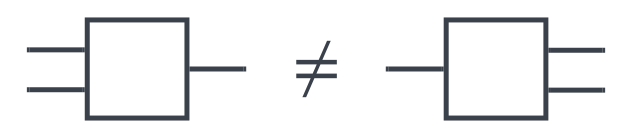

Tensor Networks
Contents
3. Tensor Networks¶
3.1. Tensor Network Diagrams¶
In the previous chapter we have introduced tensors and operations on tensors. Tensor products and contractions offer ways to compose existing tensors to new ones. Consider for example the tensor of order-\((2,1)\) tensor
It was composed from an order-\((1,1)\) tensor \(T\) and an order-\((2,1)\) tensor \(S\). Both have been combined by a tensor product (yielding 5 tensor indices) and then zipped by a contraction (yielding 3 remaining tensor indices and the summation index \(j\)).
In literature various opinions (definitions) are circulating on what tensor networks are. Some call already a decomposition of a tensor by means of tensor products and contractions a tensor networks. For example the Matrix Product State, a decomposition of a tensor into a sum of matrix products is often referred as a simplistic instance of a tensor network. Others connect the term tensor network with the graphical language (notation) we will introduce shortly. Indeed, tensor network diagrams join shapes representing tensors with wires. Hence, such diagrams display networks of tensors wired together. Defining the name is not the most important thing, so we will give a shaky definition that follows the notion of decomposition into tensors, but use tensor networks from now on always in conjunction with illustrations exploiting the graphical language.
Definition 3.1 (Tensor Network)
A tensor network is a tensor, composed from other tensors using tensor products and contractions.
Having clarified this, let us straight away jump into the graphical notation for tensor networks. It was introduced by Roger Penrose in [Pen71]. Jacob Biamonte has refined the way certain shapes underpin the structure of tensors [Bia19], we will follow mostly his suggestions.
Remark 3.1 (Tensor Network Diagrams)
Each tensor is represented by a geometric shape. Indices are represented by legs connected to the shape. We will distinguish covariant and contravariant indices by consideration of the leg direction. Covariant legs point to the left or up, contravariant legs point to the right or down. The tensor
can be drawn with left-right orientation as follows.

Orienting the legs up-down and describe tensor
as seen here.

Also having mixed orientations is possible.

The tensor product is displayed by drawing the factor tensor next to each other. We draw
as follows.
{kind=link}
The contraction of two indices will be represented by connecting the respective legs. We will call this a wire. The tensor of equation (3.1) is obtained by
and can be displayed as shown in this picture.
{kind=link}
The naming of indices is an implementation detail that might be omitted by not labeling certain (or all) legs. In general objects might not be named if not in focus. Furthermore we will be free to use symbols, containers, etc. if it supports understanding.
{kind=link}
So far the general alphabet of graphical tensor language is already defined. We will now go over some specific words.
Remark 3.2 (Vectors)
Vectors are represented by triangular shapes, e.g.
{kind=link}
We will apply this shape also to elements from tensor product spaces that have only covariant indices, e.g.

Remark 3.3 (Dual Vectors)
Contrarily, the shape is flipped when standing for an element of a dual space or tensor product of dual spaces, e.g.

Remark 3.4 (General Tensors)
All tensors combining vector parts and dual parts will usually be displayed as a square - with exception of specific tensors that shall be visually distinguishable. We have already seen examples in Remark 3.1, let us display tensor
from (3.1) again.

A first species that will own a separate shape to reveal its specifics are tensors with diagonal coefficients matrix, e.g.
These diagonal tensors are, so to speak, a hybrid of a vector and a tensor having a covariant as well as a contravariant index. This is reflected by combining the shapes of a vector and a dual vector into a diamond shape.

Now we are ready to combine tensors by connecting legs (indices) with wires (contractions). A fundamental ingredient of Linear Algebra are linear maps. In the previous chapter we have seen, how they can be formulated in terms of tensors. We will translate the formulas obtained there into the graphical tensor language. The outcome will match our intuition.
Remark 3.5 (Linear Maps)
We recall, that we can write the application of a linear map \(T\) to a vector \(v\) as the tensor product of both regarded as tensors:
Hence, this can be drawn as follows.
{kind=link}
Similarly, we can visualize the application of a dual map
as:
{kind=link}
Actually, the same tensor can be interpreted in both ways. If we connect the covariant index with a vector, then it is acting as linear map. The remaining open index of the construct is a contravariant index, symbolizing the image vector. If we connect the contravariant index of the tensor with a dual vector, then we have visualized the application of a dual linear map. The resulting image possesses a covariant index, thus being the dual image vector.
Chaining linear maps is straight forward as well. This is achieved by contracting the tensor product of the tensors representing the maps.
Hence, the picture shows what intution expects, the two tensors symbolizing the maps have to be wired together.

Hence, the picture shows what intution expects, the two tensors symbolizing the maps have to be wired together.
A bilinear map
extends this picture simply by adding and contracting the second argument to the map tensor.
{kind=link}
Multilinear maps would extend this picture even further by adding as many argument vectors as needed.
In case that the map tensor can be decomposed into a tensor product, enabling equation
the decomposition is shown as two maps next to each other. Note, that this complies with the figure of a tensor product - both tensors will be drawn independently without any interaction (as long as no contraction is involved).
{kind=link}
Remark 3.6 (Scalars, Complete Contraction)
So far we have not considered the possibility of a scalar (element of the underlying field). Since a scalar value can be treated as tensor without indices, it is exactly drawn like this, as shape without legs.

Having used a circle is arbitrary - actually it does not matter, because we will very rarely draw isoloated scalar tensors. More common is the case, that a complex tensor network is fully contracted to a scalar. We give a few examples (with limited complexity though) here. Referring to Example 2.3, the trace of a matrix can be expressed as fully contracted tensor:
{kind=link}
Using the way of visualizing composed linear maps, the trace of a matrix product (composed linear maps) would be:
{kind=link}
Another operation from Linear Algebra that results in a scalar value is the inner product. We consider the case of the inner product space being \(\C^n\) equipped with the standard basis (which is orthonormal) \(\{e_1,\ldots,e_n\}\). We can calculate the inner product of \(v=\sum\limits_{i=1}^nv^ie_i\) and \(w=\sum\limits_{j=1}^nw^je_j\) by their coefficients:
On the other hand, let \(\bar{v}=\sum\limits_{i=1}^n\bar{v}_ie^i\) be a dual vector, that has the conjugate complex coefficients of \(v\) (i.e. \(\bar{v}^i=\bar{v}_i\)) in the dual standard basis. We calculate
Thus, the inner product of \(v\) and \(w\) can be expressed with a tensor product using \(\bar{v}\) instead of \(v\). The tensor network diagram can be drawn accordingly.

With this we have introduced the basic building blocks of tensor network diagrams. As we see, they provide a bird’s eye perspective on tensor networks. Certain implementation details are abstracted away from the viewer, such as index labels or index order. For example, the tensor behind

could be
or with other index names
or changing the index order
or an object in another space
However, we want to emphasize that certain properties are strict and do not allow for ambiguity. The following tensor network diagrams refer to different object because the amounts of covariant and contravariant (the tensor’s order) do matter.
{kind=link}
But we need to be careful, indices might not be interchangeable when tensor’s internal mode of operation is known and not symmetric. Consider e.g. \(T=e^1\otimes e^2\in\R^2\otimes\R^2\) with \(\{e^1,e^2\}\) being dual standard basis. Then the diagrams

are not equal, the left one contracts to value \(1\), the right one contracts to value \(0\).
3.2. Wiring and Kronecker Delta¶
\(\delta^i_j\)
3.3. Permutations and Levi-Civita Symbol¶
\(\varepsilon_{ijk}\)